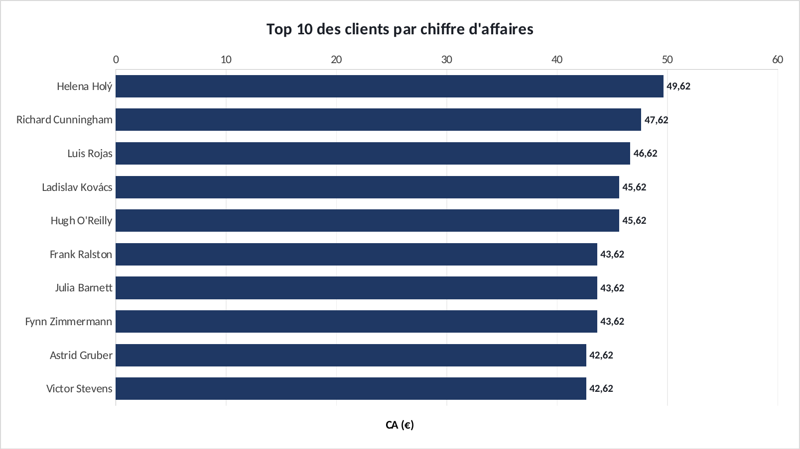
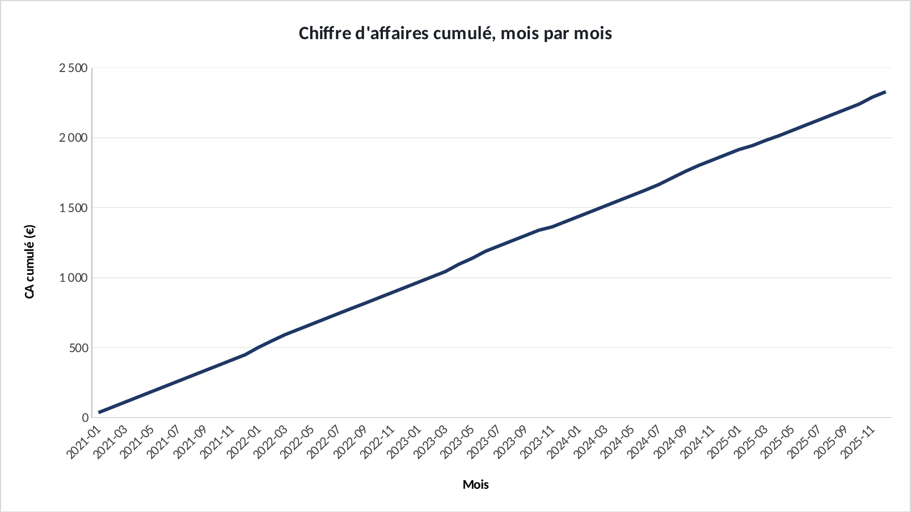

Tuto SQL + Excel · 1 h
Refaire l'analyse dans SQL + Excel.
« Analyse SQL des ventes d'un magasin de musique » : chaque graphique de l'étude, clic par clic, avec les formules. Ouvrez l'exercice et suivez.
Ce que vous allez pratiquer : DB Browser for SQLite (gratuit) · jointures, GROUP BY, fonctions fenêtre · coller un résultat SQL dans Excel · barres horizontales · un axe qui part de 0.
00 · Avant de commencerTrois réglages
- Téléchargez le fichier exercice et ouvrez-le dans Excel. Les cellules jaunes sont à remplir, les graphiques sont à construire.
- Le fichier corrigé contient la version finie : c'est de là que viennent les graphiques du site. Ouvrez-le à côté pour comparer.
- Les formules sont écrites pour Excel en français : les arguments sont séparés par
;. En anglais, remplacez;par,et utilisez le nom entre parenthèses. - Recopier une formule vers le bas : sélectionnez la cellule, puis double-cliquez sur le petit carré en bas à droite.
Les couleurs du portfolio : bleu #1F3864, orange #D9542B, gris #8FA0C2. Pour les appliquer : clic droit sur une série → Mettre en forme une série de données → pot de peinture Remplissage et trait → Remplissage uni → Couleur → Autres couleurs → onglet Personnalisées → champ Hex.
01 · Onglet RequetesLancer les requêtes SQL
La base est un fichier SQLite. On l'interroge avec un outil gratuit, puis on récupère le résultat dans Excel.
1.1 L'outil
- Installez DB Browser for SQLite (sqlitebrowser.org, gratuit, Windows et Mac).
- Téléchargez
chinook.dbdans le dépôt GitHub du projet. Dans DB Browser : Ouvrir une base de données →chinook.db.
1.2 Exécuter
- Onglet Exécuter le SQL → collez une requête de l'onglet Requetes du fichier Excel → Ctrl + Entrée.
- Dans le résultat : Ctrl + A puis Ctrl + C. Dans Excel, cliquez en A5 de l'onglet correspondant (Genres, Cumul, Clients) → Ctrl + V.
- Pour le total du magasin, lancez aussi :
SELECT ROUND(SUM(Total), 2) FROM Invoice;et collez le résultat en G2 de l'onglet Genres.
✅ Vérifiez : Onglet Genres : 10 lignes, le Rock en premier avec 826,65 €. Total en G2 : 2 328,60 €.
02 · Onglet GenresLe poids du Rock
Quelle part du chiffre d'affaires total fait chaque genre ? Le $ bloque le total quand on recopie.
2.1 La part
- En D5, puis recopiez jusqu'à D14. Format Pourcentage.
| Cellule | Formule (Excel en français) | En anglais |
|---|---|---|
| D5 | =B5/$G$2 | — |
2.2 Le graphique
- Sélectionnez A4:B14 → Insertion → Barres groupées.
- Clic droit sur l'axe des genres → Mettre en forme l'axe → Catégories en ordre inverse (le Rock passe en haut).
- Rock en orange, le reste en gris. Étiquettes de données.
✅ Vérifiez : Le Rock pèse 35,5 % du chiffre d'affaires à lui seul.

Résultat attendu, exporté du fichier corrigé.
03 · Onglet Cumul et ClientsLe cumul et les meilleurs clients
Une courbe pour la tendance, des barres pour le classement, et un piège à éviter.
3.1 La courbe
- Onglet Cumul : sélectionnez A4:A64, Ctrl, C4:C64 → Insertion → Courbes.
3.2 Les clients et le piège de l'axe
- Onglet Clients : A4:A14 + C4:C14 → Barres groupées, catégories en ordre inverse.
- Excel fait partir l'axe à 38 € : les écarts paraissent énormes alors qu'ils sont de quelques euros. Clic droit sur l'axe → Minimum =
0.
✅ Vérifiez : Cumul final : 2 328,60 €. Avec l'axe à 0, on voit que les 10 meilleurs clients pèsent presque pareil (42 à 50 €).

Résultat attendu, exporté du fichier corrigé.

Résultat attendu, exporté du fichier corrigé.
BonusExporter un graphique
- Cliquez sur le bord du graphique pour le sélectionner, puis clic droit → Enregistrer en tant qu'image… → format PNG.
- Pour une diapo : clic droit → Copier, puis Collage spécial → Image dans PowerPoint.
BonusLa même chose dans Power BI
Accueil → Obtenir des données → Texte/CSV → choisissez le fichier → délimiteur Point-virgule → Charger.
| Fichier | Visuel | Champs |
|---|---|---|
genres.csv | Graphique à barres groupées | Axe Y : genre · Axe X : ca_total |
cumul.csv | Graphique en courbes | Axe X : mois · Axe Y : ca_cumule |
Si les décimales s'affichent mal : Transformer les données → colonne → Type de données → Nombre décimal → Utilisation des paramètres régionaux → Anglais (États-Unis).